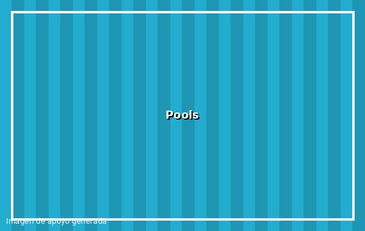

Flexible Images

Images resize to fit the container.
Fluid Layout
The grid changes with the browser width.
Media Queries
Breakpoints create tablet and desktop layouts.

Images resize to fit the container.
The grid changes with the browser width.
Breakpoints create tablet and desktop layouts.